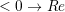
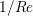
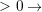
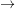

Chapter 7
Appendix
7.1 Appendix A. Extensive list of parameters .rea file
7.1.1 Parameters
This section tells nek5000
- If the input file reflects a 2D or 3D job (it should match the ldim parameter in the SIZE file).
- The combination of heat transfer, Stokes, Navier-Stokes, steady or unsteady to be run.
- The relevant physical parameters.
- The solution algorithm within nek5000 to use.
- The timestep size or Courant number to use, or whether to run variable DT (
 ), etc.
), etc.
A .rea file starts with the following three parameters:
-
NEKTON VERSION
- the version of nek5000
-
DIMENSIONAL RUN
- number of spatial dimensions (NDIM=2,3 - has to match the setting in
the SIZE file).
-
PARAMETERS FOLLOW
- the number of parameters which are going to be followed in the .rea
file.(NPARAM)
The latter specifies how many lines of .rea file, starting from the next line, are the parameters and have to be
read by the program.
7.1.2 Available Parameters
-
P001 DENSITY
- density for the case of constant properties (for variable density see parameter
P030).
-
P002 VISCOS
- kinematic viscosity (if , otherwise ).
-
P003 BETAG
- if , natural convection is turned on (Boussinesq approximation). NOT IN
USE !
-
P004 GTHETA
- model parameter for Boussinesq approximation (see parameter P003). NOT IN
USE!
-
P005 PGRADX
- NOT IN USE!
-
P006
- NOT IN USE!
-
P007 RHOCP
- navier5.f: param(7) = param(1) ! rhoCP = rho NOT IN USE!
-
P008 CONDUCT
- conductivity for the case of constant properties (if
 , it defines the Peclet
number, see parameter P030).
, it defines the Peclet
number, see parameter P030).
connect2.f: if(param(8) .lt.0.0) param(8) = -1.0/param(8)
navier5.f: param(8) = param(2) ! conduct = dyn. visc
-
P009
- NOT IN USE! (passed to CPFLD(2,3)!)
connect2.f: CPFLD(2,3)=PARAM(9)
-
P010 FINTIME
- if
 , specifies simulation end time. Otherwise, use NSTEP (P011).
, specifies simulation end time. Otherwise, use NSTEP (P011).
drive2.f: FINTIM = PARAM(10)
-
P011 NSTEP
- number of time steps.
connect2.f: param(11) = 1.0
drive2.f: NSTEPS = PARAM(11)
-
P012 DT
- upper bound on time step
 (if
(if  , then
, then  constant)
constant)
connect2.f: param(12) = 1.0
drive2.f: DT = abs(PARAM(12))
-
P013 IOCOMM
- frequency of iteration histories
drive2.f: IOCOMM = PARAM(13)
-
P014 IOTIME
- if
 , time interval to dump the fld file. Otherwise, use IOSTEP (P015).
, time interval to dump the fld file. Otherwise, use IOSTEP (P015).
drive2.f: TIMEIO = PARAM(14)
-
P015 IOSTEP
- dump frequency, number of time steps between dumps.
drive2.f: IOSTEP = PARAM(15)
navier5.f: if (iastep.eq.0) iastep=param(15) ! same as iostep
-
P016 PSSOLVER
- heat/passive scalar solver:
1: Helmholz
2: CVODE
3: CVODE with user-supplied Jacobian
Note: a negative number will set source terms to 0.
-
P017 AXIS
- NOT IN USE!
-
P018 GRID
- NOT IN USE!
-
P019 INTYPE
- NOT IN USE!
connect2.f: param(19) = 0.0
-
P020 NORDER
- NOT IN USE!
-
P021 DIVERGENCE
- tolerance for the pressure solver.
drive2.f: TOLPDF = abs(PARAM(21))
hmholtz.f: if (name.eq.’PRES’.and.param(21).ne.0) tol=abs(param(21))
-
P022 HELMHOLTZ
- tolerance for the velocity solver.
drive2.f: TOLHDF = abs(PARAM(22))
hmholtz.f: if (param(22).ne.0) tol=abs(param(22))
hmholtz.f: if (param(22).lt.0) tol=abs(param(22))*rbn0
navier4.f: if (param(22).ne.0) tol = abs(param(22))
-
P023 NPSCAL
- number of passive scalars.
connect2.f: NPSCAL=INT(PARAM(23))
-
P024 TOLREL
- relative tolerance for the passive scalar solver (CVODE).
drive2.f: TOLREL = abs(PARAM(24))
-
P025 TOLABS
- absolute tolerance for the passive scalar solver (CVODE).
drive2.f: TOLABS = abs(PARAM(25))
-
P026 COURANT
- maximum Courant number (number of RK4 substeps if OIFS is used).
drive2.f: CTARG = PARAM(26)
-
P027 TORDER
- temporal discretization order (2 or 3).
drive2.f: NBDINP = PARAM(27)
-
P028 NABMSH
- Order of temporal integration for mesh velocity.if 1, 2, or 3 use Adams-Bashforth
of corresponding order. Otherwise, extrapolation of order TORDER (P027).
-
P029 MHD_VISCOS
- if  magnetic viscosity, if magnetic Reynolds number.
connect2.f: if(param(29).lt.0.0) param(29) = -1.0/param(29)
connect2.f: if (param(29).ne.0.) ifmhd = .true.
connect2.f: cpfld(ifldmhd,1) = param(29) ! magnetic viscosity
-
P030 USERVP
- if
0: constant properties
1: user-defined properties via USERVP subroutine (each scalar separately)
2: user-defined properties via USERVP subroutine (all scalars at once)
-
P031 NPERT
- if
 , number of perturbation modes in linearized N-S.
, number of perturbation modes in linearized N-S.
connect2.f: if (param(31).ne.0.) ifpert = .true.
connect2.f: if (param(31).lt.0.) ifbase = .false. ! don’t time adv base flow
connect2.f: npert = abs(param(31))
-
P032 NBCRE2
- if
 , number of BCs in .re2 file, 0: all.
, number of BCs in .re2 file, 0: all.
connect2.f: if (param(32).gt.0) nfldt = ibc + param(32)-1
-
P033
- NOT IN USE!
-
P034
- NOT IN USE!
-
P035
- NOT IN USE!
-
P036 XMAGNET
- NOT IN USE!
-
P037 NGRIDS
- NOT IN USE!
-
P038 NORDER2
- NOT IN USE!
-
P039 NORDER3
- NOT IN USE!
-
P040
- NOT IN USE!
-
P041
- 1
 multiplicative SEMG
multiplicative SEMG
hsmg.f:c if (param(41).eq.1) ifhybrid = .true.  NOT IN USE!
NOT IN USE!
-
P042
- linear solver for the pressure equation, 0
 GMRES or 1
GMRES or 1  PCG
PCG
-
P043
- 0: additive multilevel scheme - 1: original two level scheme.
navier6.f: if (lx1.eq.2) param(43)=1.
navier6.f: if (param(43).eq.0) call hsmg_setup
-
P044
- 0=E-based additive Schwarz for PnPn-2; 1=A-based.
-
P045
- Free-surface stability control (defaults to 1.0)
subs1.f: FACTOR = PARAM(45)
-
P046
- if
 , do not set Initial Condition (no call to subroutine SETICS).
, do not set Initial Condition (no call to subroutine SETICS).
drive2.f: irst = param(46)
ic.f: irst = param(46) ! for lee’s restart (rarely used)
subs1.f: irst = param(46)
-
P047
- parameter for moving mesh (Poisson ratio for mesh elasticity solve (default 0.4)).
mvmesh.f: VNU = param(47)
-
P048
- NOT IN USE!
-
P049
- if
 , mixing length factor NOT IN USE!.
, mixing length factor NOT IN USE!.
drive2.f:c IF (PARAM(49) .LE. 0.0) PARAM(49) = TLFAC
turb.f: TLFAC = PARAM(49)
-
P050
- NOT IN USE!
-
P051
- NOT IN USE!
-
P052 HISTEP
- if
 , history points dump frequency (in number of steps).
, history points dump frequency (in number of steps).
prepost.f: if (param(52).ge.1) iohis=param(52)
-
P053
- NOT IN USE!
-
P054
- direction of fixed mass flowrate (1:
 -, 2:
-, 2:  -, 3:
-, 3:  -direction). If 0:
-direction). If 0:  -direction.
-direction.
drive2.f: if (param(54).ne.0) icvflow = abs(param(54))
drive2.f: if (param(54).lt.0) iavflow = 1 ! mean velocity
-
P055
- volumetric flow rate for periodic case; if p54
 , then p55:=mean velocity.
, then p55:=mean velocity.
drive2.f: flowrate = param(55)
-
P056
- NOT IN USE!
-
P057
- NOT IN USE!
-
P058
- NOT IN USE!
-
P059
- if , deformed elements (only relevant for FDM). !=0  full Jac. eval. for each el.
-
P060
- if
 , initialize velocity to 1e-10 (for steady Stokes problem).
, initialize velocity to 1e-10 (for steady Stokes problem).
-
P061
- NOT IN USE!
-
P062
- if
 , swap bytes for output.
, swap bytes for output.
-
P063 WDSIZO
- real output wordsize (8: 8-byte reals, else 4-byte).
prepost.f: if (param(63).gt.0) wdsizo = 8 ! 64-bit .fld file
-
P064
- if , restart perturbation solution
pertsupport.f: if(param(64).ne.1) then !fresh start, param(64) is restart flag
-
P065
- number of IO nodes (if write in separate subdirectories).
-
P066
- Output format: (only postx uses .rea value; other nondefault should be set in usrdat) (if
 binary else ASCII).
binary else ASCII).
connect2.f: param(66) = 6 ! binary is default
connect2.f: param(66) = 0 ! ASCII
-
P067
- read format (if binary else ASCII).
-
P068
- averaging frequency in avg_all (0: every timestep).
-
P069
- NOT IN USE!
-
P070
- NOT IN USE!
-
P071
- NOT IN USE!
-
P072
- NOT IN USE!
-
P073
- NOT IN USE!
-
P074
- if
 print Helmholtz solver iterations.
print Helmholtz solver iterations.
hmholtz.f: if (nid.eq.0.and.ifprint.and.param(74).ne.0) ifprinthmh=.true.
-
P075
- NOT IN USE!
-
P076
- NOT IN USE!
-
P077
- NOT IN USE!
-
P078
- NOT IN USE!
-
P079
- NOT IN USE!
-
P080
- NOT IN USE!
-
P081
- NOT IN USE!
-
P082
- coarse-grid dimension (2: linear). NOT IN USE!
-
P083
- NOT IN USE!
-
P084
- if
 , force initial time step to this value.
, force initial time step to this value.
-
P085
- set
 in setdt.
in setdt.
subs1.f: dt=dtopf*param(85)
-
P086
- RESERVED ! if
 , use skew-symmetric form, else convective form.
, use skew-symmetric form, else convective form.
drive2.f: PARAM(86) = 0 ! No skew-symm. convection for now
navier1.f: if (param(86).ne.0.0) then ! skew-symmetric form
-
P087
- NOT IN USE!
-
P088
- NOT IN USE!
-
P089
- RESERVED !
-
P090
- NOT IN USE!
-
P091
- NOT IN USE!
-
P092
- NOT IN USE!
-
P093
- number of previous solutions to use for residual projection.
(adjust MXPREF in SIZEu accordingly)
-
P094
- if
 , start projecting velocity and passive scalars after P094 steps
, start projecting velocity and passive scalars after P094 steps
-
P095
- if
 , start projecting pressure after P095 steps
, start projecting pressure after P095 steps
-
P096
- NOT IN USE!
-
P097
- NOT IN USE!
-
P098
- NOT IN USE!
-
P099
- dealiasing:
 : disable
: disable
3: old dealiasing
4: new dealiasing
-
P100
- RESERVED ! pressure preconditioner when using CG solver (0: Jacobi,
 : two-level
Schwarz) or wiseversa?
: two-level
Schwarz) or wiseversa?
-
P101
- number of additional modes to filter (0: only last mode)
navier5.f: ncut = param(101)+1
-
P102
- NOT IN USE!
-
P103
- filter weight for last mode (: disabled)
-
P107
- if
 , add it to h2 in sethlm
, add it to h2 in sethlm
-
P116 NELX
- number of elements in x for Fast Tensor Product FTP solver (0: do not use FTP).
NOTE: box geometries, constant properties only!
-
P117 NELY
- number of elements in y for FTP
-
P118 NELZ
- number of elements in z for FTP
7.1.3 Available Logical Switches
This part of .rea file starts with such a line:
n LOGICAL SWITCHES FOLLOW
where is the number of logical switches which is set in the following lines.
7.1.4 Logical switches
Note that by default all logical switches are set to false.
-
IFFLOW
- solve for fluid (velocity, pressure).
-
IFHEAT
- solve for heat (temperature and/or scalars).
-
IFTRAN
- solve transient equations (otherwise, solve the steady Stokes flow).
-
IFADVC
- specify the fields with convection.
-
IFTMSH
- specify the field(s) defined on T mesh (first field is the ALE mesh).
-
IFAXIS
- axisymmetric formulation.
-
IFSTRS
- use stress formulation in the incompressible case.
-
IFLOMACH
- use low Mach number compressible flow.
-
IFMGRID
- moving grid (for free surface flow).
-
IFMVBD
- moving boundary (for free surface flow).
-
IFCHAR
- use characteristics for convection operator.
-
IFSYNC
- use mpi barriers to provide better timing information.
-
IFUSERVP
- user-defined properties (e.g.,
 , ) varying with space and time.
, ) varying with space and time.
7.2 Appendix B. Extensive list of parameters SIZE file
-
ldim
- : number of spatial dimensions (2 or 3).
-
lx1, ly1, lz1
- : number of (GLL) points in the
 ,
,  and
and  directions, respectively, within
each element of mesh1 (velocity) which is equal to the (polynomial order1) by definition.
is usually the same as and for 2D cases .
directions, respectively, within
each element of mesh1 (velocity) which is equal to the (polynomial order1) by definition.
is usually the same as and for 2D cases .
-
lx2, ly2, lz2
- : number of (GLL) points in the
 ,
,  and directions, respectively, within each
element of mesh2 (pressure). Use for PN/PN formulation or for
PN/PN-2 formulation.
and directions, respectively, within each
element of mesh2 (pressure). Use for PN/PN formulation or for
PN/PN-2 formulation.
-
lx3, ly3, lz3
- : number of (GLL) points in the ,
 and
and  directions, respectively, within
each element of mesh3.
directions, respectively, within
each element of mesh3.
-
lxd, lyd, lzd
- : number of points for over integration (dealiasing), use three half rule e.g. for
use .
-
lelx, lely, lelz
- : maximum number of elements per rank for global FDM (Fast Diagonalization
Method) solver.
-
ldimt
- : maximum number of T-array fields (temperature + additional scalars).
-
lp
- : maximum number of ranks.
-
lelg
- : maximum (global) number of elements (it is usually set more than the # of elements existing
in the mesh, for making maximum use of memory is can be set to the exact number of mesh
elements).
-
lelt
- : maximum number of local elements for T-mesh (per rank, ).
-
lelv
- : maximum number of local elements for V-mesh ().
-
lpelv,lpelt,lpert
- : Number of elements of the perturbation field, number of perturbation fields
-
lpx1, lpy1, lpz1
- : Number of point in
 ,
, ,
, direction of perturbation field within each
element of mesh1
direction of perturbation field within each
element of mesh1
-
lpx2, lpy2, lpz2
- : Number of point in
 ,
, ,
, direction of perturbation field within each
element of mesh2
direction of perturbation field within each
element of mesh2
-
lbelv, lbelt
- : Total Number of elements of the B-field (MHD)
-
lbx1, lby1, lbz1
- : Number of point in
 ,
, ,
, direction of B-field within each element of
mesh1
direction of B-field within each element of
mesh1
-
lbx2, lby2, lbz2
- : Number of point in
 ,
, ,
, direction of B-field within each element of
mesh2
direction of B-field within each element of
mesh2
-
lx1m, ly1m, lz1m
- : when the mesh is a moving type , otherwise it is set to 1.
-
lxz
- : LXZ = LX1*LZ1
connect1.f: common /scruz/ snx(lxz) , sny(lxz) , snz(lxz) , efc(lxz)
-
lorder
- : maximum time integration order (2 or 3).
-
maxobj
- : maximum number of objects. zero if not using objects?
-
maxmbr
- : maximum number of members in an object.
-
lhis
- : maximum number of history points a single rank will read in (NP*LHIS number of points
in hpts.in).
-
lctmp0
- : NOT IN USE!
drive1.f:c COMMON /CTMP0/ DUMMY0(LCTMP0)
-
lctmp1
- :
drive1.f:c COMMON /CTMP1/ DUMMY1(LCTMP1)
drive2.f: COMMON /SCRNS/ WORK(LCTMP1)
-
lvec
- : NOT IN USE!
-
mxprev
- : maximum number of history entries for residual projection (recommended value: 20).
-
lgmres
- : dimension of Krylov subspace in GMRES (recommended value: 40).
-
lmvec
- : NOT IN USE !
-
lsvec
- : NOT IN USE!
-
lstore
- : NOT IN USE!
-
maxmor
- :
-
lzl
- : for 2D cases and for 3D cases (computed automatically).
The following parameters are deprecated and were subsequently removed in newer versions.
-
LELGEC
- : LELGEC = 1
-
LXYZ2
- : LXYZ2 = 1
-
LXZ21
- : LXZ21 = 1
-
LMAXV
- : LMAXV = LX1*LY1*LZ1*LELV
-
LMAXT
- : LMAXT = LX1*LY1*LZ1*LELT
-
LMAXP
- : LMAXP = LX1*LY1*LZ1*LELV